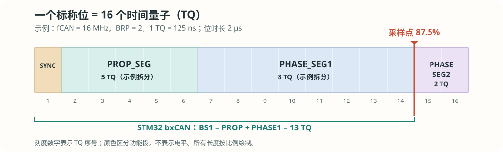
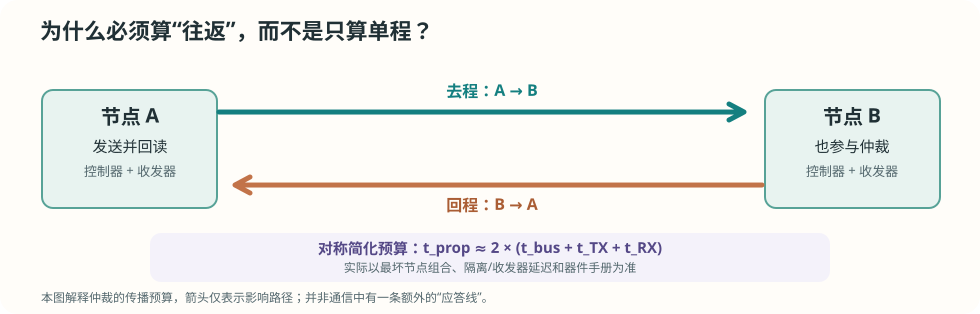
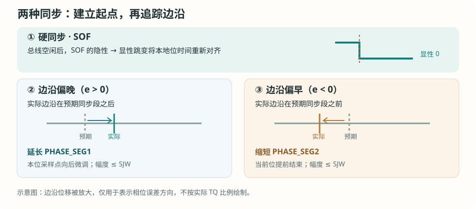

同样是 500 kbit/s，为什么有的节点听得清，有的会报错？
波特率只规定一位有多长；采样点决定何时认定这位的电平；同步机制负责把各节点的时间基准拉回到合理范围。
设想两个控制器都被配置为 500 kbit/s。一个在位时间的 60% 处采样，另一个在 87.5% 处采样。即使速率计算完全正确，线缆、收发器和振荡器引入的延迟也会让它们面对不同的时序余量。CAN 不传输独立时钟，它依赖总线上的合格跳变沿来维持一致的位边界。
本章先解释经典 CAN 的标称位时间，再推导 STM32 bxCAN 配置。CAN FD 的数据段位时序和次级采样点不在本章范围内。
一个 CAN 位，不是一个瞬间，而是一小段时间
把每个标称位拆成若干个 时间量子 TQ（Time Quantum）。Bosch CAN 2.0 的概念模型有四段：同步段、传播段、相位缓冲段 1、相位缓冲段 2。四段合起来是一位；其中同步段固定为 1 TQ。Microchip 位时序说明

| 段 | 关键职责 | 设置注意 |
|---|---|---|
| SYNC_SEG | 期望在此遇到用于同步的边沿 | 固定 1 TQ；不是“上升沿或下降沿任意重置” |
| PROP_SEG | 为仲裁与物理链路往返延迟留预算 | 取值受具体控制器限制，不能脱离线缆和收发器选 |
| PHASE_SEG1 | 需要时被延长，以吸收正相位误差 | 位采样点位于本段末尾 |
| PHASE_SEG2 | 需要时被缩短，以吸收负相位误差 | 还要满足信息处理时间与控制器要求 |
BS1 与 BS2：BS1 = PROP_SEG + PHASE_SEG1，BS2 = PHASE_SEG2。实际内部如何分配同步余量，应按控制器技术文档理解；不要因为 BS1 = 13 就声称“传播段天然有 13 TQ”。参见 ST 的 bxCAN 位时序教程。采样点必须等到远端的电平“来得及被看见”
在 采样点，接收逻辑判断当前位是显性（0）还是隐性（1）。单点采样可写为：从一位起点到采样点，经过 SYNC_SEG + PROP_SEG + PHASE_SEG1。采样点位置是该累计长度占整个位时间的比例。
在 1 + 13 + 2 = 16 TQ 时：14 / 16 = 87.5%
CAN 的无损仲裁要求节点能够在自己的仲裁位采样时刻看见别的节点拉出的显性电平。若只把“20 米线缆的一次单程传播时间”填入传播补偿，就漏掉了回程影响，以及 TX/RX 电子器件和可能的隔离延迟。

2 × (线缆单程延迟 + 驱动器延迟 + 接收器延迟) 估算；非对称节点必须逐方向计算最坏值。参见 Analog Devices 位时序分析。“采样点越晚越好”也不准确：采样点后面还需要足够的相位段 2、SJW 和处理时间余量。工程上常见的 75%～87.5% 只是可考虑的范围，不是标准对所有拓扑规定的万能答案。必须同时满足速率、传播延迟、振荡器容差、控制器寄存器范围和整网一致性。
先在 SOF 对齐，再利用帧内跳变微调
硬同步发生在帧开始时符合条件的隐性 → 显性 SOF 边沿；控制器据此重新开始位时间。重同步用于帧内满足协议条件的隐性 → 显性边沿，并非“每个跳变都能调整”，也不是每个 TQ 都发生。发送端和接收端对重同步还有具体规则，需遵守控制器实现。

e > 0 表示合格边沿偏晚，延长 PHASE_SEG1；e < 0 表示边沿偏早，缩短 PHASE_SEG2。这里画的是方向与效果，不是逐 TQ 的真实波形。Microchip 同步规则总线空闲后，节点观察 SOF 的显性边沿，进行硬同步；不是所有数据位都执行硬同步。
合格边沿落在期望同步段之后为正误差；落在前面为负误差。不要倒置符号与补偿方向。
调整量的绝对值由相位误差与同步跳转宽度 SJW 共同限制，不能无限延长或缩短。
例如允许 SJW = 2 TQ 时，若合格边沿产生 e = +1 TQ，可延长相位段 1 共 1 TQ；若 e = +3 TQ，单次调整最多 2 TQ。这只是位时间跟踪，不是修改所有节点的永久晶振频率。
在 Microchip 对经典 CAN 的说明中，一位时间内最多进行一次重同步，使用隐性 → 显性跳变，并对发送节点的正相位误差重同步有额外例外。具体细节见 AN754 · Understanding Microchip's CAN Module Bit Timing。
算出同一个 500 kbit/s，并不只剩一个答案
下列公式使用 STM32 bxCAN 的语义：fCAN 必须是实际提供给该 CAN 外设的时钟，不是随意拿 MCU CPU 主频代入。这里的 BRP 表示物理分频系数；寄存器编码值通常比它小 1。BS1、BS2 均表示实际 TQ 数，不是原始寄存器位模式。
位时间 = (1 + BS1 + BS2) × TQ
bitrate = fCAN / [BRP × (1 + BS1 + BS2)]
sample point = (1 + BS1) / (1 + BS1 + BS2)
| 可复算示例 | fCAN / BRP | BS1 / BS2 / SJW | 结果 |
|---|---|---|---|
| A · 16 MHz | 16 MHz / 2 | 13 / 2 / 2 | 16 TQ；500 kbit/s；87.5% |
| B · 36 MHz | 36 MHz / 4 | 14 / 3 / 2 | 18 TQ；500 kbit/s；83.33% |
两个例子都能得到 500 kbit/s，却把采样点放在不同位置。不能只靠“有相同波特率”判断互操作余量，更不能在只知道 BS1 的情况下直接宣称具备某个特定传播段长度。
# bxCAN 示例 A（数值表示 TQ / 实际分频系数）
fCAN = 16_000_000 # Hz，实际 CAN 外设时钟
BRP, BS1, BS2, SJW = 2, 13, 2, 2
n_tq = 1 + BS1 + BS2 # 16
tq_ns = 1e9 * BRP / fCAN # 125 ns
bitrate = fCAN / (BRP * n_tq) # 500000 bps
sample = (1 + BS1) / n_tq # 0.875
# HAL 中应对应 Prescaler=2、BS1=13TQ、BS2=2TQ、SJW=2TQ；
# 需要按实际 STM32 系列的 HAL 头文件选取宏，并核对 CAN 时钟。BRP ∈ [1,1024]、BS1 ∈ [1,16]、BS2 ∈ [1,8]、SJW ∈ [1,4]，且 SJW ≤ BS2。某些其它控制器的 PROP、PHASE、信息处理时间及字段编码规则与 bxCAN 不同；把这组范围当成所有 CAN 控制器的规则会算错。交互实验：同一速率可以有不同采样位置吗？
先选 16 MHz / 2 / 13 / 2，观察 500 kbit/s 与 87.5%；再切换到 36 MHz / 4 / 14 / 3，比较采样点。下面只验证 bxCAN 数值约束与算术，并不能模拟线缆、电磁兼容性或真实的振荡器漂移。
bxCAN 标称位时序计算器
500.000 kbit/s · 87.50%，共 16 TQ，单 TQ 125.0 ns。
输入非整数、超出 bxCAN 范围或 SJW 超过 BS2 时，计算器会给出提醒；数值“合法”不代表整网已通过时序预算验证。
思考：把 BRP=2 改为 4，采样点会改变吗？
若 BS1 与 BS2 不变，则比例不会改变，仍是 87.5%；但每个 TQ 加倍、位时间加倍，速率会变成 250 kbit/s。采样点位置与实际位速率是不同问题。
想把数值检查落到本地终端，可以运行仓库中的 参考计算脚本，并通过 python -m unittest discover -s tests -v 运行对应回归测试。它没有声称替代示波器或实机 CAN 控制器。
出现 ACK、位错误或偶发掉帧时，先查什么？
- 核对真实 CAN 外设时钟。时钟树、APB 分频、外设时钟源与代码中的假设是否一致？不要用“CPU 72 MHz”直接代替 CAN 时钟。
- 读回 BRP、BS1、BS2、SJW。确认驱动 API 用的是实际 TQ 还是寄存器减一编码。再由公式算出位速率与采样点。
- 比较全网节点的标称位速率。除速率外，也记录采样点与 SJW；不同器件的容差预算未必相同。
- 建立最坏传播预算。包括最长物理路径、收发器 TX/RX 延迟、隔离器、线缆速度和终端/支线影响。不要只用“每米 5 ns”代替整个环路。
- 核对振荡器与物理层。晶振误差是否处于控制器/协议要求范围？终端电阻、共模干扰、反射、电源完整性是否正常？“超过 1% 一定失败”与“0.5% 一定成功”都不是通用判据。
- 做真实测量。用 CAN 分析仪读取错误状态与重发趋势，用示波器观察波形，必要时更改采样点或降低速率后复测，而不是仅因为软件自检通过就判定硬件稳定。
一个实用判断方法：先计算出可实现的参数组合，再通过最坏路径延迟/时钟误差预算筛选，最后才进入实机压力测试。任何一个环节都不能被“推荐采样点 87.5%”替代。
记住三个互相独立的问题
多久传完一位？看 fCAN、BRP、TQ/位。在何时读一位？看 BS1/BS2 和物理传播延迟。边沿偏离时如何追上？看同步规则、PHASE1/PHASE2 与 SJW。理解了三者的分工，才不会把“同样的波特率”误认为“同样的通信余量”。
资料与适用边界
- Microchip · CAN Bit Timing Configuration：四段定义、传播补偿、TQ 与采样点。
- Microchip · CAN Bus Synchronization：硬同步与相位误差方向。
- ST · CAN (bxCAN) bit time configuration：bxCAN 的 BS1、BS2、位速率和采样点的器件表述。
- Analog Devices · Configure CAN Bit Timing：物理路径、隔离与传播延迟预算。
- Microchip AN754：同步边沿约束与可复核的说明图。
内容面向经典 CAN / STM32 bxCAN 标称位时序。不同 CAN 控制器、CAN FD 和具体芯片参考手册的寄存器范围与采样机制可能不同。